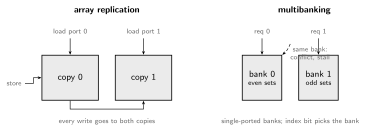
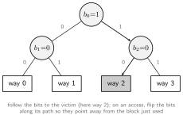

Caches exploit temporal locality (reuse) and spatial locality (nearby addresses). Virtual memory provides address translation and protection; demand paging can also move data between DRAM and storage.
Latency and capacity depend on implementation. Registers are small and fast; SRAM caches trade capacity for latency; DRAM provides larger, slower main memory; storage has much higher access latency. Compare times in nanoseconds when clock rates differ.
for (i = 0; i < n; i++) sum += a[i]; // spatial: nearby elements often share a cache line
// temporal: sum, i every iterationData moves in lines (blocks), often 64 B; size is implementation-dependent: fetching a whole line amortizes DRAM access and prefetches spatially. A cache holds a subset of lines plus bookkeeping: a valid bit and a tag identifying which memory line occupies the slot.
The address splits into three fields (line size , number of sets ):
The index selects a set, the stored tag is compared against the address tag, and on a hit the offset selects the word. Placement policies differ only in how many slots a line may occupy:
| Organization | Line can live in | Cost | Conflict misses |
|---|---|---|---|
| direct-mapped | exactly 1 slot | 1 comparator | worst |
| -way set-associative | slots of one set | comparators + way mux | low for |
| fully associative | anywhere | comparator per line (CAM) | none |
Worked example: 32 KiB, 8-way, 64 B lines, 48-bit addresses. Sets , so offset , index , tag bits. Note the index+offset fit in 12 bits, exactly a 4 KiB page; this is deliberate (VIPT, below).
A cache is two SRAM arrays (tags, data) plus comparators, and two physical questions shape every design: in what order are the arrays read, and how many requests can they serve at once?
The tag and data arrays can be accessed two ways, and the choice is a latency-versus-frequency trade:
OOO execution can hide some cache latency when independent work exists. Instruction and data caches each choose their latency, bandwidth, and energy tradeoffs.
Serving multiple memory operations per cycle requires bandwidth. A true multiported SRAM supports multiple accesses but costs area and may lengthen access time. Alternatives include:

| Approach | Idea | Cost | Used by |
|---|---|---|---|
| array replication | two full copies, one load port each; stores write both | 2x area | Alpha 21164 |
| time multiplexing | multiple array accesses per core cycle | requires faster array timing | implementation-dependent |
| multibanking | split into single-ported banks; an index bit routes each request | bank conflicts stall | R10000, Opteron; widely used |
Instruction-cache accesses often return several sequential instructions per lookup. Predicted targets, prefetching, and decoupled fetch can create independent outstanding requests, so I-caches need not be single-ported or blocking.
Multilevel: . With , , , , : cycles. Distinguish local miss rate (misses/accesses to that level) from global (misses/all accesses); L2’s local rate looks bad because L1 already filtered the easy hits.
This AMAT model describes serial average access cost, not CPU stall time when misses overlap. Miss concurrency and bandwidth matter too. In steady state, Little’s law gives average requests in flight = completion rate × average latency. Sustaining 32 GB/s with 64-byte transfers and 100 ns latency needs roughly 50 concurrent requests; queues and MSHRs must support that concurrency.
The 3 Cs classify misses by what would have prevented them:
| Miss class | Cause | Fix |
|---|---|---|
| compulsory | first touch ever | larger lines, prefetching |
| capacity | working set > cache size | bigger cache, blocking in software |
| conflict | too many lines map to one set | more associativity, victim cache |
Line size is a trade, not a free win: bigger lines cut compulsory misses while spatial locality lasts, then waste bandwidth and evict useful data (fewer lines for the same capacity).
Which way to evict? The candidates, cheapest to smartest:
| Policy | State per set | Idea |
|---|---|---|
| random | no per-set recency state | surprisingly close to LRU at high associativity |
| FIFO / round-robin | bits | evict oldest filled, ignores reuse |
| true LRU | at least bits | evict least recently used; exact but costly past 4-way |
| tree pseudo-LRU | bits | binary tree of “which half was used less” bits |
| RRIP family | bits | predict re-reference distance, not recency |
Tree pseudo-LRU is the workhorse: one bit per internal node of a binary tree over the ways, each pointing toward the less-recently-used half. Finding the victim is following the bits; recording an access is flipping the bits on the path to point away:

Streaming accesses can displace reusable data under LRU. RRIP tracks predicted reuse with small per-line counters; insertion and promotion policies resist scans. DRRIP uses sampled sets to choose between policies.
Software helps: loop blocking restructures matrix code so the working tile fits in cache, turning capacity misses into hits.
Virtual memory gives every process its own address space, mapped to physical frames by the OS:
Memory is divided into pages (4 KiB standard; 2 MiB/1 GiB huge pages). The page table, maintained by the OS and walked by hardware, maps virtual page number (VPN) to physical page number (PPN). Each PTE holds PPN plus valid, permissions, accessed and dirty bits.
A flat table is infeasible (RV64 Sv39: entries per process), so tables are hierarchical, and sparse address spaces allocate only the paths in use:
Each VPN slice indexes one level; a leaf PTE at an upper level maps a huge page. A miss at any level with no valid entry raises a page fault: the OS handler (Exceptions) either fetches the page from disk and retries the instruction, grows the mapping (stack, heap), or kills the process (segfault). Restarting faulted instructions is why precise exceptions exist.
A TLB caches translations and permissions, avoiding most page-table walks. Reach is entries × page size (128 × 4 KiB = 512 KiB). A miss triggers a hardware walk or software refill, depending on the ISA. ASIDs distinguish address spaces; page-table changes still require the architecture’s translation-invalidation protocol.
Where does the cache sit relative to translation?
For simple alias-free VIPT, index + offset must fit in the page offset, i.e. cache size ≤ page size × associativity (4 KiB × 8 = 32 KiB, the classic L1 size). VIPT gets PIPT correctness at VIVT speed, which is why the worked example above has exactly 64 sets.
Multicore hierarchy notes: private L1/L2 per core with a shared LLC is standard; inclusive LLCs duplicate all inner contents (wasteful, but the LLC can filter coherence traffic), exclusive maximize capacity, non-inclusive make no inclusion guarantee. Coherence itself is Multicore Cache Coherence.
Author: Sai Govardhan (saigov14@gmail.com)
License: MIT.